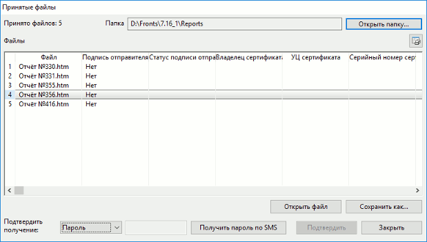
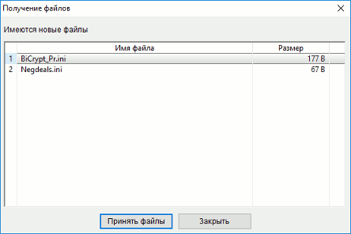

Брокер имеет возможность передать клиенту какие-либо файлы, например, подготовленные им отчеты. Файлы могут содержать электронную цифровую подпись (ЭЦП) отправителя. Достоверность ЭЦП проверяется автоматически при приеме файлов. В зависимости от настроек Модуля формирования отчетов у брокера, клиент может подтвердить файл с помощью ЭЦП, если это предписано регламентом брокерского обслуживания, подтвердить файл без подписи (в случае отсутствия настроенного криптопровайдера) или подтвердить одноразовым паролем. Факты получения и подтверждения файлов клиентом регистрируются сервером QUIK. Прием файлов производится автоматически при соединении программы QUIK с сервером.
Получение файлов сопровождается появлением в программе QUIK формы, показанной
на рисунке. Если брокер отправил клиенту одновременно файлы, подписанные
электронной цифровой подписью и не подписанные, то все принятые файлы
разделятся на две части и отобразятся в разных окнах. При необходимости, окно с
перечнем принятых файлов можно открыть вручную через пункт меню Расширения / Отчеты /
Принятые файлы....  В окне «Принятые файлы» содержится следующая информация:
Назначение
Принятые файлы
меню Расширения / Отчеты / Принятые файлы...
Параметр
Назначение
Файл
Имя файла
Подпись отправителя
Статус подписи отправителя
Владелец сертификата
Наименование владельца сертификата
УЦ сертификата
Наименование учетного центра, которым был выдан
сертификат
Серийный номер сертификата
Номер выданного сертификата
Ошибка
Сообщение об ошибке
Подтвержден
«Да» – файл подтвержден пользователем, иначе не заполняется
При нажатии на кнопку открывается окно редактирования таблицы принятых файлов, в котором настраивается отображение необходимых столбцов.
Полученные файлы можно открыть для просмотра, нажав кнопку «Открыть файл» в нижней части окна. Файл открывается во внешней программе (например, MS Excel), которая должна быть предварительно установлена на компьютере пользователя.
Файлы сохраняются в стандартный каталог, который служит только для ведения архива полученных файлов, поэтому при открытии файла открывается его копия во временном каталоге, а сам файл остаётся без изменений в стандартном каталоге. При необходимости файл сохраняется пользователем в другой каталог, нажатием на кнопку «Сохранить как…».
При приеме клиентом файлов выбирается доступный способ подтверждения, соответствующий полученному файлу. В зависимости от настроек Модуля формирования отчетов можно выбрать следующие способы подтверждения файлов в поле со списком «Подтвердить получение»:
Для подтверждения выбранного файла нажмите кнопку «Подтвердить».
При выборе уже подтверждённого файла поле со списком «Подтвердить получение» недоступно.
Формирование ЭЦП выполняется внешней программой, которая должна быть установлена на компьютере пользователя. За консультациями по получению и установке данной программы обратитесь к своему брокеру.
Сформированная ЭЦП регистрируется на сервере брокера. Результат выполнения операции отображается в столбце «Подтвержден» окна «Принятые файлы» и в «Окне сообщений».
Файлы, принятые пользователем, могут быть отозваны брокером, при условии, что они не подтверждены клиентом. Для отзыва неподписанных файлов клиенту нужно связаться со своим брокером. После выполнения этой процедуры файл удаляется из списка принятых файлов.
Если в Модуле формирования отчетов включена настройка «Оповещать о новых файлах», то прием файлов производится как в момент соединения программы QUIK с сервером, так и позже, по мере поступления новых файлов. Получение новых файлов в текущем сеансе работы обозначается системным уведомлением и в меню Отчеты появляется новый пункт Получение файлов.
В таблице с полученными файлами каждая строка соответствует отдельному принятому файлу. В столбцах отображаются следующие параметры:
| Параметр | Назначение |
|---|---|
| Имя файла | Имя файла |
| Размер | Размер файла |

Нажав кнопку «Принять файлы», открывается окно «Принятые файлы», в котором отображаются все вновь принятые файлы из списка. После принятия новых файлов пункт меню Получение файлов пропадает из меню Отчеты.